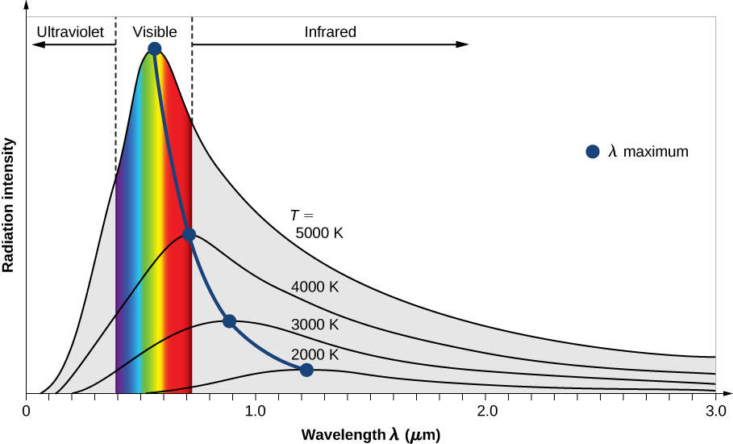
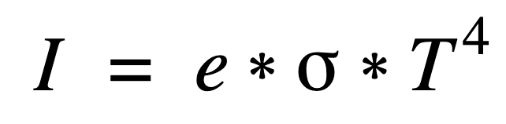

Emittance
Quick Def: All matter that has energy loses that energy to its surroundings by emitting EM radiation. As objects get hotter, they emit more radiation, and the wavelength of the radiation gets longer.
All matter that has energy loses that energy to its surroundings by emitting EM radiation. LM Electromagnetic Radiation With day-to-day temperatures, the majority of emittance is Infrared Radiation. This is why you can see temperature with IR cameras. The EM spectrum isn't discrete; it's continuous. This means that objects emit radiation at a wide range of wavelengths. A emissions spectra is a graph of the emittance of an object at all wavelengths. The total energy emitted by an object at all frequencies is called intensity. Intensity is the area under the curve of an emittance spectrum.
Solid objects like coffee cups and the earth predictably emit radiation based on their current temperature. The figure below shows the change in emittance spectrum as the temperature increases.
Change in Emittance with a Change in Temp
The important takeaway is that as temperature increases, the spectrum grows, and the radiation emitted has shorter wavelengths. 2000 Kelvin is 3140 Farenheight. Even at these temperatures, the visible light only makes up a tiny fraction of the emitted radiation. Everyday objects emit no visible light, and campfires at around 873.15 Kelvin emit a small amount of red and orange light. The bulk of campfire emittance is IR radiation which is why it feels warm to stand near them. The sun's surface is 5,778 degrees kelvin which is why the majority of the light from the sun is visible light. From the diagram, we can also see that the sun is hot enough to emit UV rays which cause sunburns.
The relationship between intensity and temperature is so predictable that there is an equation that defines it. The Stephen Boltzman equation:
The key takeaway is that temperature (T) is raised to the fourth, so a tiny increase in temperature creates a considerable increase in intensity (I). We can use this equation to figure out how much energy the earth receives from the sun. This calculation is the first step in all climate change models. LM Climate Models